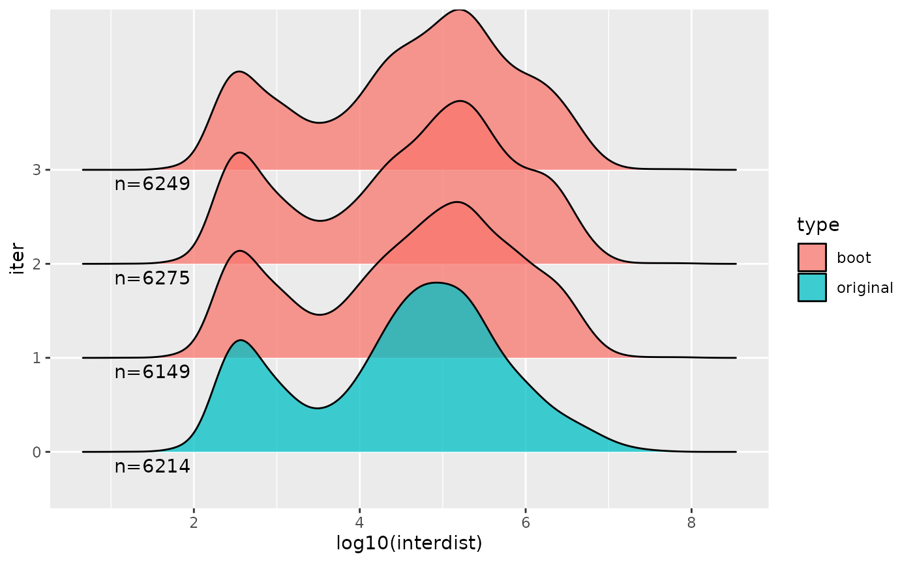

nullranges: Generation of nullranges via bootstrapping or covariate matching
Wancen Mu, Eric S. Davis
July 2022
nullranges.RmdOverview
Description
The nullranges package contains functions for generation of feature sets (genomic regions) for exploring the null hypothesis of overlap or colocalization of two observed feature sets. The package has two approaches for generating null feature sets, matching and bootstrapping:
-
Matched subsampling with matchRanges:
Subsampling from a pool of features, but controlling for certain characteristics.
-
Bootstrapping with bootRanges:
Subsampling from original features, but controlling for their spatial pattern
In this workshop, we will demonstrate the two major approaches for
generating null hypothesis genomic ranges with the
nullranges package.
Background and other methods
Suppose we want to examine the significance of overlaps of genomic sets of features \(x\) and \(y\). To test the significance of this overlap, we calculate the overlap expected under the null by generating a null feature set \(y'\) (potentially many times). The null features in \(y'\) may be characterized by:
- Drawing from a larger pool \(z\) (\(y' \subset z\)), such that \(y\) and \(y'\) have a similar distribution over one or more covariates. This is the “matching” case. Note that the features in \(y'\) are original features, just drawn from a different pool than y.
- Generating a new set of genomic features \(y'\), constructing them from the original set \(y\) by selecting blocks of the genome with replacement, i.e. such that features can be sampled more than once. This is the “bootstrapping” case. Note that, in this case, \(y'\) is an artificial feature set, although the re-sampled features can retain covariates such as score from the original feature set \(y\).
Releated work
For general considerations of generation of null feature sets or segmentation for enrichment or colocalization analysis, consider the papers of De, Pedersen, and Kechris (2014), Haiminen, Mannila, and Terzi (2007), Huen and Russell (2010), and Kanduri et al. (2019) (with links in references below). Other Bioconductor packages that offer randomization techniques for enrichment analysis include: MatchIt LOLA (Sheffield and Bock 2016) and regioneR (Gel et al. 2016). Methods implemented outside of Bioconductor include GAT (Heger et al. 2013), GSC (Bickel et al. 2010), GREAT (McLean et al. 2010), GenometriCorr (Favorov et al. 2012), or ChIP-Enrich (Welch et al. 2014). Note that our block bootstrapping idea motivated from GSC. In order to address computationally intensive issue, GSC implements a strategy of swapping pairs of blocks in order to generate bootstrap distribution while avoiding generation of a genome-scale bootstrap sample. We uses efficient vectorized code for operation on GRanges objects (Lawrence 2013) to offer \(\color{brown}{\text{genome-scale}}\) bootstrap data with additional features/visualizations, and is re-implemented within R/Bioconductor.
Time outline
An example for a 45-minute workshop:
| Activity | Time |
|---|---|
| Intro to nullranges | 5m |
| Matching with matchRanges | 15m |
| Bootstrapping with bootRanges | 15m |
| Q&A | 10m |
Matching covariates with matchRanges
Overview
matchRanges() allows users to subsample a pool of ranges
such that the resulting matched set contains similar distributions of
covariates (i.e., genomic features) as a focal set of interest.

Resulting sets can then be compared, without potential confounding effects from covariates.
Biological background
Most chromatin loops are formed in a processes called loop extrusion, where the ring-like cohesin complex extrudes chromatin until stopped by bound CTCF transcription factors (TFs). Therefore, most chromatin loops tend to be bound at both ends by CTCF. However, the anchors of chromatin loops are also located in accessible chromatin regions and act as potential confounders.

Suppose we wanted to compare CTCF occupancy between the anchors of
looped ranges and unlooped ranges. matchRanges() can help
by generating a null set of ranges controlling for potential confounding
by chromatin accessibility.
The hg19_10kb_bins dataset from the
nullrangesData package contains ranges for every 10Kb bin
along the genome with CTCF, DNase, and loop feature annotations
fromGM12878 (see ?nullrangesData::hg19_10kb_bins).
Matching with matchRanges()
Before we generate our null ranges, let’s take a look at our example dataset:
library(nullrangesData)
## Load example data
bins <- hg19_10kb_bins()
bins
#> GRanges object with 303641 ranges and 5 metadata columns:
#> seqnames ranges strand | n_ctcf_sites ctcfSignal
#> <Rle> <IRanges> <Rle> | <numeric> <numeric>
#> [1] chr1 1-10000 * | 0 0
#> [2] chr1 10001-20000 * | 0 0
#> [3] chr1 20001-30000 * | 0 0
#> [4] chr1 30001-40000 * | 0 0
#> [5] chr1 40001-50000 * | 0 0
#> ... ... ... ... . ... ...
#> [303637] chrX 155230001-155240000 * | 0 0.00000
#> [303638] chrX 155240001-155250000 * | 0 0.00000
#> [303639] chrX 155250001-155260000 * | 1 4.09522
#> [303640] chrX 155260001-155270000 * | 0 0.00000
#> [303641] chrX 155270001-155270560 * | 0 0.00000
#> n_dnase_sites dnaseSignal looped
#> <factor> <numeric> <logical>
#> [1] 0 0.00000 FALSE
#> [2] 0 5.03572 FALSE
#> [3] 0 0.00000 FALSE
#> [4] 0 0.00000 FALSE
#> [5] 0 0.00000 FALSE
#> ... ... ... ...
#> [303637] 0 8.42068 FALSE
#> [303638] 0 4.08961 FALSE
#> [303639] 0 6.00443 FALSE
#> [303640] 0 8.07179 FALSE
#> [303641] 0 0.00000 FALSE
#> -------
#> seqinfo: 23 sequences from hg19 genomematchRanges() works by selecting a set of
covariate-matched controls from a pool of options based on an input
focal set of interest. Here, we define focal as bins that
contain a loop anchor, pool as bins that don’t contain a
loop anchor, and covar as DNase signal and number of DNase
sites per bin:
library(nullranges)
## Match ranges
set.seed(123)
mgr <- matchRanges(focal = bins[bins$looped],
pool = bins[!bins$looped],
covar = ~dnaseSignal + n_dnase_sites)
mgr
#> MatchedGRanges object with 13979 ranges and 5 metadata columns:
#> seqnames ranges strand | n_ctcf_sites ctcfSignal
#> <Rle> <IRanges> <Rle> | <numeric> <numeric>
#> [1] chr8 16360001-16370000 * | 0 0.00000
#> [2] chr1 212260001-212270000 * | 0 0.00000
#> [3] chrX 9570001-9580000 * | 0 0.00000
#> [4] chr9 96840001-96850000 * | 0 0.00000
#> [5] chr16 31480001-31490000 * | 1 4.82341
#> ... ... ... ... . ... ...
#> [13975] chr12 105060001-105070000 * | 1 4.29979
#> [13976] chr4 103530001-103540000 * | 1 5.67681
#> [13977] chr14 65860001-65870000 * | 0 0.00000
#> [13978] chr2 96940001-96950000 * | 0 0.00000
#> [13979] chr19 38910001-38920000 * | 0 0.00000
#> n_dnase_sites dnaseSignal looped
#> <factor> <numeric> <logical>
#> [1] 0 7.40552 FALSE
#> [2] 1 9.72456 FALSE
#> [3] 3+ 10.87185 FALSE
#> [4] 1 8.86143 FALSE
#> [5] 3+ 10.65095 FALSE
#> ... ... ... ...
#> [13975] 3+ 13.90788 FALSE
#> [13976] 1 9.89450 FALSE
#> [13977] 1 9.83681 FALSE
#> [13978] 0 9.66206 FALSE
#> [13979] 2 12.13214 FALSE
#> -------
#> seqinfo: 23 sequences from hg19 genomeWhen the focal and pool arguments are GRanges objects,
matchRanges() returns a MatchedGRanges object.
The MatchedGRanges class extends GRanges, so
all of the same operations can be applied:
library(GenomicRanges)
library(plyranges)
library(ggplot2)
## Summarize ctcfSignal by n_ctcf_sites
mgr %>%
group_by(n_ctcf_sites) %>%
summarize(ctcfSignal = mean(ctcfSignal)) %>%
as.data.frame() %>%
ggplot(aes(x = n_ctcf_sites, y = ctcfSignal)) +
geom_line() +
geom_point()
Here, we utilize the plyranges
package which provides a set of “tidy” verbs for manipulating
genomic ranges for a seamless and integrated genomic analysis
workflow.
Assessing quality of matching
We can get a quick summary of the matching quality with
overview():
overview(mgr)
#> MatchedGRanges object:
#> set N dnaseSignal.mean dnaseSignal.sd n_dnase_sites.0
#> focal 13979 10.0 1.9 2341
#> matched 13979 10.0 1.9 2297
#> pool 289662 7.9 2.7 222164
#> unmatched 275683 7.8 2.7 219867
#> n_dnase_sites.1 n_dnase_sites.2 n_dnase_sites.3+ ps.mean ps.sd
#> 4829 2353 4456 0.130 0.072
#> 5187 2487 4008 0.130 0.071
#> 34826 13627 19045 0.042 0.061
#> 29639 11140 15037 0.037 0.057
#> --------
#> focal - matched:
#> dnaseSignal.mean dnaseSignal.sd n_dnase_sites.0 n_dnase_sites.1
#> 0.037 -0.0061 44 -360
#> n_dnase_sites.2 n_dnase_sites.3+ ps.mean ps.sd
#> -130 450 0.00025 0.00081For continuous covariates (such as dnaseSignal),
overview() shows the mean and standard deviation between
each matched set. For categorical covariates, such as
n_dnase_sites, overview() reports the number
of observations per category and matched set. The bottom section shows
the mean and s.d (or n, for factors) difference between focal and
matched sets.
Visualizing matching results
Let’s visualize covariate balance by plotting propensity scores for the focal, pool, and matched sets:
plotPropensity(mgr, sets = c('f', 'p', 'm'), type = 'ridges')
These plots show that the distributions of covariates in the matched set are similar to the focal set.
We can ensure that covariate distributions have been matched
appropriately by using the covariates() function to extract
matched covariates along with patchwork and
plotCovariate to visualize all distributions:
Compare CTCF sites
Using our matched ranges, we can compare CTCF occupancy in bins that
1) contain a loop anchor (i.e. looped), 2) don’t contain a loop anchor
(i.e. unlooped), or 3) don’t contain a loop anchor, but are also matched
for the strength and number of DNase sites (i.e. matched). In this case,
we calculate CTCF occupancy as the percent of bins that contain CTCF
among our 3 sets by using the focal() and
pool() accessor functions:
## Percent of bins with CTCF
g1 <- (sum(focal(mgr)$n_ctcf_sites >= 1) / length(focal(mgr))) * 100
g2 <- (sum(pool(mgr)$n_ctcf_sites >= 1) / length(pool(mgr))) * 100
g3 <- (sum(mgr$n_ctcf_sites >= 1) / length(mgr)) * 100
## Visualize
barplot(height = c(g1, g2, g3),
names = c('looped\n(focal)', 'unlooped\n(pool)', 'unlooped\n(matched)'),
ylab = "CTCF occupied bins (%)",
col = c('#1F78B4', '#33A02C', '#A6CEE3'),
main = 'CTCF occupancy',
border = NA,
las = 1)
Block bootstrapping with bootRanges
Biological background
One strategy for generating a null distribution for a dataset that doesn’t have a focal/pool structure as above is to permute or shuffle the genomic features, possibly while considering an exclusion list of regions where features should not be located. However, genomic feature sets often exhibit a \(\color{olive}{\text{complex dependency structure}}\), both in terms of their \(\color{brown}{\text{spatial pattern}}\), and in terms of \(\color{brown}{\text{local correlation of metadata}}\) (signal strength, cell-type-specificity, etc.) Naive permutation ignores the dependence between positions and thus won’t exhibits natural clumping properties. An alternative way is to generate random feature sets by sampling large blocks of features within the segments from the original set with replacement, as proposed by Bickel et al. (2010).
Below, we see that various features (GC content, gene density, and CRE location) exhibit spatial patterns easily discernible at the scale of 500kb.

Below are histograms from Bickel et al. (2010) showing various ways of estimating the null distribution of overlaps between two sequences, with the true null on top (known as the sequences are generated from a random process, and so additional sequences can be generated). The block bootstrap can do a much better job of \(\color{brown}{\text{estimating the variance of the null distribution}}\), compared to naive permutation of features.

Overview
In a segmented block bootstrap, the blocks are sampled and placed within regions of a genome segmentation. That is, for a genome segmented into states 1,2,…,S, blocks from state s will be used to tile the ranges of state s in each bootstrap sample. The process can be visualized in (A), a block with length \(L_b\) is \(\color{brown}{\text{randomly}}\) selected from state “red” and move to a \(\color{brown}{\text{tile}}\) block across chromosome within same states.
An example workflow of bootRanges used in combination with plyranges is diagrammed in (B), and can be summarized as:
- Overlap GRanges of feature \(x\) and GRanges of feature \(y\) to derive interested observed statistics
-
bootRanges()with optionalsegmentationandexcludecreates a bootRanges object \(y'\) - Overlap GRanges of feature \(x\) and \(y'\) to derive interested bootstrap statistics
- \(z\) test is performed for testing the null hypothesis that there is no true biological enrichment

Segmented block bootstrap
We demonstrate usage by loading a set of DNase hypersensitivity sites (DHS) from the ENCODE project (ENCODE 2012) in A549 cell line (ENCSR614GWM). Here, for speed, we work with a pre-processed data object from the nullrangesData package.
For speed of the vignette, we restrict to a smaller number of DHS, filtering by the signal value. We also remove metadata columns that we don’t need for the bootstrap analysis. Consider, when creating bootstrapped data, that you will be creating an object many times larger than your original features, so \(\color{brown}{\text{filtering and trimming}}\) extra metadata can help make the analysis more efficient.
dhs <- DHSA549Hg38()
#> see ?nullrangesData and browseVignettes('nullrangesData') for documentation
#> loading from cache
dhs <- dhs %>% plyranges::filter(signalValue > 100) %>%
mutate(id = seq_along(.)) %>%
plyranges::select(id)
dhs
#> GRanges object with 6214 ranges and 1 metadata column:
#> seqnames ranges strand | id
#> <Rle> <IRanges> <Rle> | <integer>
#> [1] chr1 629126-629275 * | 1
#> [2] chr1 629306-629455 * | 2
#> [3] chr1 629901-630170 * | 3
#> [4] chr1 630346-630495 * | 4
#> [5] chr1 630521-630670 * | 5
#> ... ... ... ... . ...
#> [6210] chrY 11307570-11307719 * | 6210
#> [6211] chrY 11308010-11308159 * | 6211
#> [6212] chrY 11320890-11321039 * | 6212
#> [6213] chrY 11322530-11322679 * | 6213
#> [6214] chrY 56834934-56835083 * | 6214
#> -------
#> seqinfo: 24 sequences from hg38 genome
table(seqnames(dhs))
#>
#> chr1 chr2 chr3 chr4 chr5 chr6 chr7 chr8 chr9 chr10 chr11 chr12 chr13
#> 1436 252 108 30 148 51 184 146 155 443 436 526 20
#> chr14 chr15 chr16 chr17 chr18 chr19 chr20 chr21 chr22 chrX chrY
#> 197 265 214 715 20 649 142 31 19 17 10Import excluded regions
\(\color{brown}{\text{To avoid placing bootstrap features into regions of the genome that don’t typically have features}}\). We next import excluded regions including ENCODE-produced excludable regions(Amemiya, Kundaje, and Boyle 2019), telomeres from UCSC, centromeres (Commo 2022). For easy use, pre-combined excludable regions is stored in ExperimentHub.
suppressPackageStartupMessages(library(ExperimentHub))
eh = ExperimentHub()
# query(eh, "nullrangesdata")
exclude <- eh[["EH7306"]]Pre-built segmentations
The segmented block bootstrap has two options, either:
- Perform a de-novo segmentation of the genome using feature density, e.g. gene density
- Use exiting segmentation (e.g. ChromHMM, etc.) downloaded from AnnotationHub or external to Bioconductor (BED files imported with rtracklayer)
segmentDensity() from nullranges provide first
option by CBS or HMM methods. Here we loaded pre-built
segmentations for easy use in hg38 with \(L_s=2e6\) considering excludable regions.
Assessment of segmentation through ranges plot, bar plot and box plot
could be plotted by plotSegment(). Detailed Usage is shown
in vignette Segmented
block bootstrap from the nullranges package.
seg_cbs <- eh[["EH7307"]]Subsampling with bootRanges()
Now we apply a segmented block bootstrap with blocks of size 500kb, to the peaks. Here we show generation of 10 iterations of a block bootstrap followed by a typical overlap analysis using plyranges (Lee, Cook, and Lawrence 2019). (We might normally do 100 iterations or more, depending on the granularity of the bootstrap distribution that is needed.)
set.seed(5) # for reproducibility
R <- 10
blockLength <- 5e5
boots <- bootRanges(dhs, blockLength, R = R, seg = seg_cbs, exclude=exclude)
boots
#> bootRanges object with 62764 ranges and 4 metadata columns:
#> seqnames ranges strand | id block iter
#> <Rle> <IRanges> <Rle> | <integer> <integer> <Rle>
#> [1] chr1 242791-242940 * | 347 5 1
#> [2] chr1 256031-256180 * | 348 5 1
#> [3] chr1 391535-391684 * | 5301 8 1
#> [4] chr1 421046-421195 * | 5302 8 1
#> [5] chr1 438186-438335 * | 5303 8 1
#> ... ... ... ... . ... ... ...
#> [62760] chrY 22010887-22011036 * | 6075 12428 10
#> [62761] chrY 25408146-25408295 * | 1826 12436 10
#> [62762] chrY 26573840-26573989 * | 576 12439 10
#> [62763] chrY 26595240-26595389 * | 577 12439 10
#> [62764] chrY 28050177-28050326 * | 3027 12443 10
#> blockLength
#> <Rle>
#> [1] 500000
#> [2] 500000
#> [3] 500000
#> [4] 500000
#> [5] 500000
#> ... ...
#> [62760] 500000
#> [62761] 500000
#> [62762] 500000
#> [62763] 500000
#> [62764] 500000
#> -------
#> seqinfo: 24 sequences from hg38 genomeWhat is returned here? The bootRanges function returns a
bootRanges object, which is a simple sub-class of
GRanges. The iteration (iter) and the block length
(blockLength) are recorded as metadata columns, accessible
via mcols.
Assessing quality of subsampling
We can examine properties of permuted y over iterations, and compare to the original y. To do so, we first add the original features as iter=0. Then compute summaries:
suppressPackageStartupMessages(library(tidyr))
combined <- dhs %>%
mutate(iter=0) %>%
bind_ranges(boots) %>%
plyranges::select(iter)
stats <- combined %>%
group_by(iter) %>%
summarize(n = n()) %>%
as_tibble()
head(stats)
#> # A tibble: 6 × 2
#> iter n
#> <fct> <int>
#> 1 0 6214
#> 2 1 6149
#> 3 2 6275
#> 4 3 6249
#> 5 4 6293
#> 6 5 6365We can also look at distributions of various aspects, e.g. here the inter-feature distance of features, across a few of the bootstraps and the original feature set y.
suppressPackageStartupMessages(library(ggridges))
suppressPackageStartupMessages(library(purrr))
interdist <- function(dat) {
x = dat[-1,]
y = dat[-nrow(dat),]
ifelse(x$seqnames == y$seqnames, x$start + floor((x$width - 1)/2) - y$start-floor((y$width - 1)/2), NA)}
combined %>% plyranges::filter(iter %in% 0:3) %>%
plyranges::select(iter) %>%
as.data.frame() %>%
nest(-iter) %>%
mutate(interdist = map(data, ~interdist(.))) %>%
select(iter,interdist) %>%
unnest(interdist) %>%
mutate(type = ifelse(iter == 0, "original", "boot")) %>%
ggplot(aes(log10(interdist), iter, fill=type)) +
geom_density_ridges(alpha = 0.75) +
geom_text(data=head(stats,4),
aes(x=1.5, y=iter, label=paste0("n=",n), fill=NULL),
vjust=1.5)
#> Picking joint bandwidth of 0.198
Derive interested statistics
Suppose we have a set of features x and we are
interested in
evaluating the enrichment of this set with the DHS. We can calculate
for example the sum observed number of overlaps for features in
x with DHS in whole genome (or something more complicated,
e.g. the maximum log fold change or signal value for DHS peaks within a
maxgap window of x).
x <- GRanges("chr2", IRanges(1 + 50:99 * 1e6, width=1e6), x_id=1:50)
x <- x %>% mutate(n_overlaps = count_overlaps(., dhs))
sum( x$n_overlaps )
#> [1] 64We can repeat this with the bootstrapped features using a
group_by command, a summarize, followed by a
second group_by and summarize. It may help to
step through these commands one by one to understand what the
intermediate output is.
Note that we need to use tidyr::complete in order to
fill in combinations of x and iter where the
overlap was 0.
boot_stats <- x %>% join_overlap_inner(boots) %>%
group_by(iter) %>%
summarize(n_overlaps = n()) %>%
as.data.frame() %>%
complete(iter, fill=list(n_overlaps = 0)) %>%
group_by(iter) %>%
summarize(meanOverlaps = sum(n_overlaps))If one is interested in assessing a \(\color{brown}{\text{feature-wise}}\)
statistics instead of \(\color{brown}{\text{genome-wise}}\)
statistics, eg.,the mean observed number of overlaps per feature or mean
base pair overlap in x, one can also group by both
(block,iter). 10,000 total blocks may
therefore be sufficient to derive a bootstrap distribution, avoiding the
need to generate many bootstrap genomes of data.
Finally we can plot a histogram. In this case, as the x
features were arbitrary, our observed value falls within the
distribution of mean overlap with bootstrapped data.
ggplot(boot_stats, aes(meanOverlaps)) +
geom_histogram()
#> `stat_bin()` using `bins = 30`. Pick better value with `binwidth`.For more examples of combining bootRanges from
nullranges with plyranges piped operations, see the
relevant chapter in the tidy-ranges-tutorial
book.
Extension
Optimized effect size threshold
Penalized splines across a range of effect sizes on the null sets can be modeled, through which to derive confidence interval at the same time on every effect size. Therefore, an optimized effect size threshold could be derived, eg. rather than limiting DEG logFC at a arbitrary threshold.

Derive statistics of interest from other formats
Instead of deriving statistics of interest from GRanges metadata column, count matrix from SummerizedExperiment or SingleCellExperiment could also be used. One case study is to assess the correlation of the all pairs of genes and promoter peaks from Chromium Single Cell Multiome ATAC + Gene Expression.
- Plyrangs pseudo code saving the count matrix in GRanges’s metadata
column as a
NumericList()format and use Plyranges in downstream analysis.
## split sparse count matrix into NumericList
rna <- rna_Granges[-which(rna.sd==0)] %>%
mutate(counts1 = NumericList(asplit(rna.scaled, 1)))%>% sort()
promoter <- promoter_Granges[-which(promoter.sd==0)] %>%
mutate(counts2 = NumericList(asplit(promoter.scaled, 1))) %>% sort()
bootranges <- bootRanges(promoter,blockLength = 5e5,R=R,type = "bootstrap", withinChrom = F)
## draw mean correlation distribution plot
cor_whole<-rna %>% join_overlap_inner(bootranges, maxgap=1000) %>%
mutate(rho = 1/(n(col)-1) * sum(counts1 * counts2)) %>%
select(rho,iter) %>%
group_by(iter) %>%
summarise(meanCor = mean(rho)) %>%
as.data.frame()- TidySE pesudo code
Or creating a SummarizedExperiment object and use tidySummarizedExperiment to derive statistics of interest.
library(tidySummarizedExperiment)
## make an SE where each row is an overlap
se_rna <- SummarizedExperiment(
assays=list(rna=rna.scaled),
rowRanges=rna_Granges)
se_promoter <- SummarizedExperiment(
assays=list(promoter=promoter.scaled),
rowRanges=promoter_Granges)
## make an SE where each row is an overlap
makeOverlapSE <- function(se_rna, se_promoter) {
idx <- rowRanges(se_rna) %>% join_overlap_inner(rowRanges(se_promoter),maxgap = 1000)
assay_x <- assay(se_rna, "rna")[ idx$gene, ]
assay_y <- assay(se_promoter, "promoter")[ idx$peak, ]
# this is needed to build the SE
rownames(assay_x) <- rownames(assay_y) <- seq_along( idx$gene )
new_ranges <- rowRanges(se_rna)[ idx$gene ]
names(new_ranges) <- seq_along( idx$gene )
SummarizedExperiment(
assays=list(x=assay_x, y=assay_y),
rowRanges=new_ranges
)
}
se <- makeOverlapSE(se_rna, se_promoter)
se %>%
as_tibble() %>%
nest(data = -.feature) %>%
mutate(rho = map(data,
function(data) data %>% summarize(rho = cor(x, y))
)) %>%
unnest(rho) %>%
select(-data)